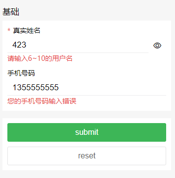

form表单
示例

<ly-form @formSubmit="formSubmit" :formList="formList" :model=model></ly-form>
model: {
username: '',
phone: ''
},
formList: [
{
legend: "基础",
fields: [
{
label: 'input',
title: "真实姓名",
id: "name",
modelKey: "username",
value: "",
maxlength: 15,
type: "text",
disabled: false,
required: true,
rules: [
{ required: true, message: "请输入用户名" },
{ min: 6, max: 10, message: "请输入6~10的用户名" }
],
showEye: {
open: true,
reverse: false
},
clearable: {
visible: true,
blurHidden: true
}
},
{
label: 'input',
title: "手机号码",
id: "phone",
modelKey: "phone",
value: "",
maxlength: 11,
type: "tel",
disabled: false,
rules: [
{ required: true, message: "您的手机号码未输入" },
{
pattern: /^1[3456789]\d{9}$/,
message: "您的手机号码输入错误"
}
]
}
]
},
{
fields: [
{
label: 'button',
type: 'submit',
value: 'submit'
// fn: this.f1
},
{
label: 'button',
type: 'reset',
value: 'reset',
mode: 'line'
}
]
}
],
Props 配置
| 参数 | 说明 | 类型 | 可选值 | 默认值 |
|---|---|---|---|---|
| formList(必传) | 表单数据列表 | Array | [] | |
| model | 双向绑定值列表 | Object | {} |
formList子配置项
数组每个对象对应一个区域
| 参数 | 说明 | 类型 | 可选值 | 默认值 |
|---|---|---|---|---|
| legend | 区域标题 | String | ||
| fields | 每个区域的表单数据列表 | Array |
formList中fields配置项
| 参数 | 说明 | 类型 | 可选值 | 默认值 |
|---|---|---|---|---|
| label | 标签名 | String | input、button | {} |
| modelKey | 用于双向绑定的键值 | String | ||
| value | 双向绑定的默认值 | String | ||
| 其余配置项参考对应label的配置项 |
默认双向绑定的是fields中的value值，如果传了model，则model中的属性的值会自动获取formList-fields中配置的相同modelKey的值
事件
| 事件名 | 说明 | 参数 |
|---|---|---|
| formSubmit | 先校验规则，通过则触发提交表单事件 |